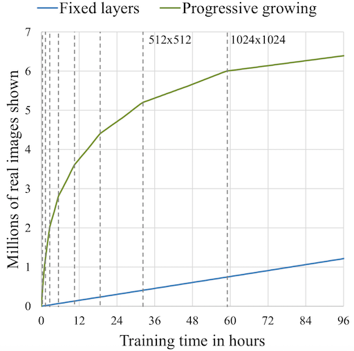
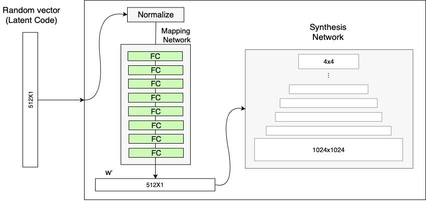
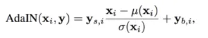
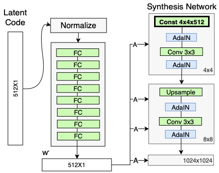
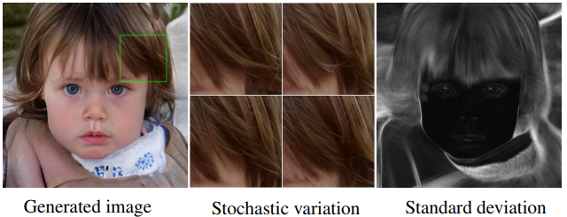

Ever wondered how a letter combined from English and Hindi would look like? Or how the Mona Lisa painted by Picasso would look like? How a friend of yours would look in the opposite gender or aged? Or how the Night King would look with different expressions?
With growing advancement in the field of Deep Learning, all this is not only possible, but relatively easy to do with the inference of a powerful neural network (rather than hours spent on Photoshop). The neural networks that make this possible are termed adversarial networks. Often described as one of the coolest concepts in machine learning, they are actually a set of more than one network (usually two) which are continually competing with each other (hence, adversarially), producing some interesting results along the way.
In this article we will dive deep into the Style GAN architecture and get our hands dirty with code by creating our own images exactly like This Person Doesn't Exist.
Style GAN Introduction
StyleGAN was originally an open-source project by NVIDIA to create a generative model that could output high-resolution human faces. The basis of the model was established by a research paper published by Tero Karras, Samuli Laine, and Timo Aila, all researchers at NVIDIA.
But first, let's build some intuition about GANs.
GAN Intuition
The basic components of every GAN are two neural networks - a generator that synthesizes new samples from scratch, and a discriminator that takes samples from both the training data and the generator's output and predicts if they are "real" or "fake".

source: freecodecamp
The generator input is a random vector (noise) and therefore its initial output is also noise. Over time, as it receives feedback from the discriminator, it learns to synthesize more "realistic" images. The discriminator also improves over time by comparing generated samples with real samples, making it harder for the generator to deceive it.
The loss function of GANs works on a Min-Max game - where the loss from the generator is minimized and that from the discriminator is maximized.

source: programmersought
There were significant problems in generating high-resolution images from this standard GAN method. To overcome this, NVIDIA developed ProGAN - Progressive Growing Generative Adversarial Neural Network.
ProGAN Architecture
ProGAN works by gradually increasing the resolution, ensuring that the network evolves slowly - initially learning a simple problem before progressing to learning more complex problems (or, in this case, images of a higher resolution). This kind of training principle ensures stability and has been proven to minimize common problems associated with GANs such as mode collapse. It also makes certain that high level features are worked upon first before moving on to the finer details, reducing the likelihood of such features being generated incorrectly.

No. of images trained for a given time - comparing traditional GAN with ProGAN. towardsdatascience
ProGAN works fast and is able to create high-resolution images but a small change in input affects multiple features at the same time. A good analogy would be genes - changing a single gene might affect multiple traits. To overcome this, certain changes were made to make the Style GAN architecture more robust.
Style GAN
Style GAN architecture allows the user to tune hyperparameters. Moreover, due to the addition of style at each convolution layer, it allows for a factor of variability in generated images.

Traditional GAN architecture compared to Style GAN architecture. source
One point to be noted here is that all the changes in the Style GAN architecture are made to the Generator part only. The Discriminator is left untouched.
Style GAN allows two images to be generated and then combined by taking low-level features from one and high-level features from the other. A mixing regularization technique is used by the generator, causing some percentage of both to appear in the output image.
At every convolution layer, different styles can be used to generate an image: coarse styles having a resolution between 4×4 to 8×8, middle styles with a resolution of 16×16 to 32×32, or fine styles with a resolution from 64×64 to 1024×1024. These coarse styles govern the features and details like face shape, pose, and hair style - while minute details like eye colour or other microstructures are governed by fine styles.
Mapping Network
The Style GAN uses a mapping network to input a normalised vector W to the network. The mapping network as developed in the original NVIDIA Style GAN paper has 8 fully connected layers of 512×1 dimension.

Mapping Network of Style GAN architecture. source
The mapping network is used because the traditional GAN is unable to control features and styles to a great extent. NVIDIA's architecture includes an intermediate "latent space", which can be thought of as being "detachable" - giving an edge over traditional GAN architecture. The traditional GAN architecture is biased according to the dataset and causes a problem known as Feature Entanglement.
A good example would be the entanglement between the features of hair color and gender. If the dataset used for training has a general trend of males having short hair and females having long hair, the neural network would learn that males can only have short hair and vice-versa. As a result, changing the latent vector to obtain long hair for a male image would also end up changing the gender, leading to an image of a woman.

Feature Entanglement. source
The mapping network helps overcome this issue of feature entanglement and generates more realistic images.
AdaIN
A special layer called AdaIN (Adaptive Instance Normalization) is used for adding the mapping network output W to the synthesis network. The module is added to each resolution level of the Synthesis Network and defines the visual expression of the features at that level. Before adding to the synthesis network, AdaIN is also responsible for standardizing the mapping network output to standard Gaussian.

Calculation of the Adaptive Instance Normalization (AdaIN) in StyleGAN.
Removing Traditional Input Noise
The traditional GAN input is Gaussian noise that wraps around the complete mapping network space. Consider a situation where images of males and females are present in a dataset mapped according to beard / no beard. Female facial images are unlikely to have beards - so Gaussian noise in this case would wrap around the complete feature space, increasing the input size where it is not needed. The researchers found that image features are controlled by W and AdaIN, so the initial input can be omitted and replaced by constant values.

Replacing the random input with a learned constant.
The StyleGAN architecture also adds noise on a per-pixel basis after each convolution layer. This creates "stochastic variation" in the image - allowing localized style changes to be applied to stochastic aspects like wrinkles, freckles, skin pores, stubble, etc.

Explanation of Stochastic Variation in StyleGAN.
That's How We CODE!
After all this theory it's time to finally enter the fun part - understanding the code and implementing our own Style GAN architecture.
First, we sample a whole bunch of random vectors and send them through a generator network to produce images. Once we have that dataset, we use ResNet to map images back to their respective latent codes.
The model pipeline looks like this: a query image is taken (can be your own) and passed through a ResNet to generate a latent code. The latent code is passed through a generator to produce facial images. These generated images are passed through a VGG network to generate a semantic feature vector - extracted from a pre-final layer. The query image is also fed through VGG to generate semantic features. The L2 distance between both feature vectors is then minimized by running gradient descent, sending gradients back into the latent code. Note that throughout this backpropagation process, the generator weights are fixed - only the latent code at the input is updated.
You can try implementing your own Style GAN and generate images. The link below contains the code for the same.